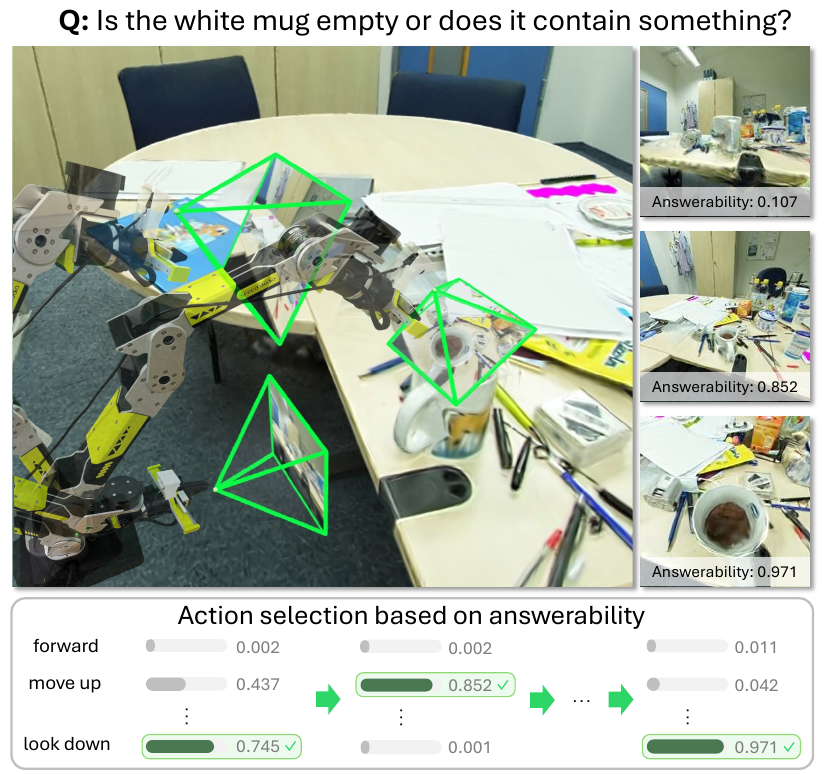
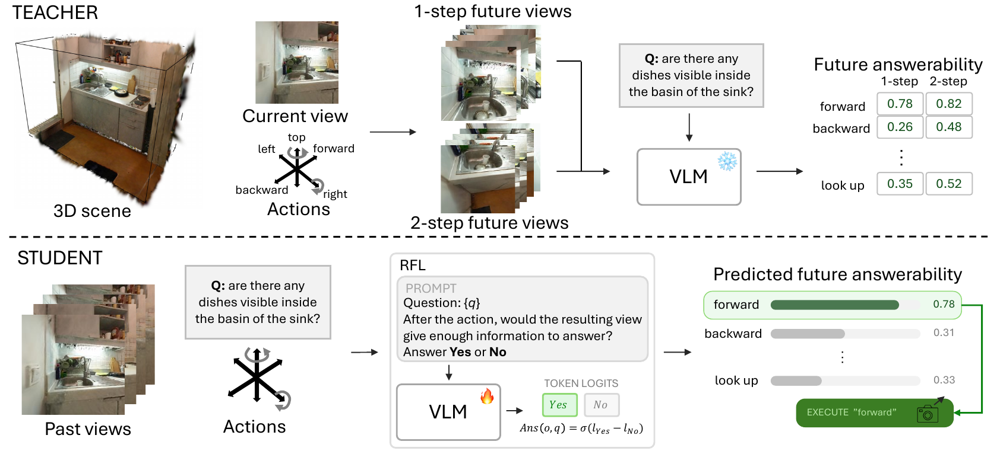
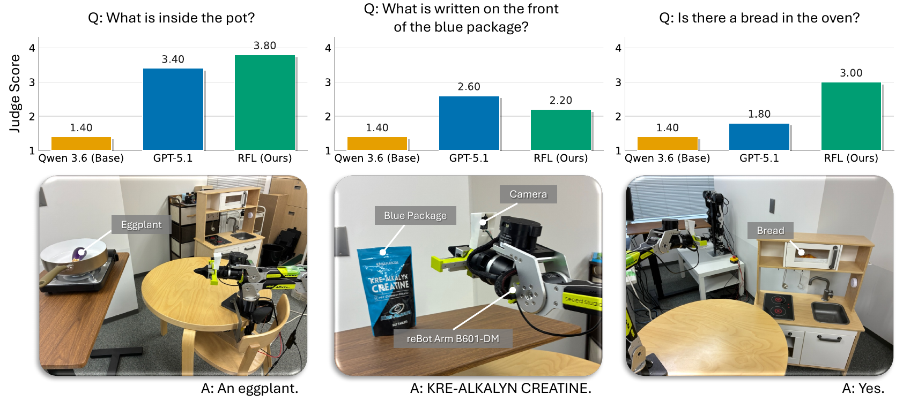

Predict view usefulness—without rendering future images.
Supplementary video · Rendering-free lookahead in simulation and on a real robot.
How should a robot choose its next view?
To see inside a pot or read a whiteboard, a robot must find the right viewpoint. But which camera motion will reveal the evidence?
Answerability is a VLM’s estimate that a view contains enough evidence to answer the question, scored from 0 to 1. For “Is the mug empty?”, answerability is low from a side view that hides the contents and high from an overhead view that reveals them.
Predict future answerability.
RFL predicts answerability after each candidate motion and selects the highest-scoring one—without rendering future views.
How it works
A frozen VLM scores answerability using its normalized “Yes” versus “No” probability.

Observe
Read the question and recent views.
Score camera motions
Predict future answerability for each motion.
Move & answer
Execute the best motion and repeat until stopping.
Rendering during training. Prediction during deployment.
A teacher renders future views in 3D Gaussian Splatting scenes and scores them. The student learns one-step, then two-step action values, using only the question, recent views, and candidate motion at deployment.

When to stop: the base VLM decides when to stop. In evaluation, GPT-5.1 answers from the final view.
Evaluating viewpoint selection in unseen scenes
On 377 test episodes across 21 unseen scenes, RFL scores 3.05 versus 2.14 for the base VLM (+43%) and 2.81 for GPT-5.1.
Mean judge scores measure correctness and visual grounding on a 1–5 scale. RFL leads four of six question types.
Aggregate results from Table I of the paper. The videos below illustrate selected episodes.
See how the viewpoints differ
Compare RFL with GPT-5.1, Gemini 3.0 Flash, and the base VLM (Qwen3.6-27B) on the same question.
How to read these comparisons
Each rollout video shows one second per observation, with two seconds for the initial and final views. Judge scores range from 1 to 5 and evaluate whether the final answer is visually grounded and correct. GPT-5.1 answers from each method’s final view using the same protocol; GPT-5.5 judges the result. These are selected examples, not aggregate benchmark results.
Real-world experiments
Trained in simulation, RFL controls a 6-DoF reBot Arm B601-DM with an end-effector camera, selecting among feasible motions.
Is there bread in the oven?
RFL moves up and looks down to obtain the evidence, then stops with the correct answer.What is inside the pot?
The camera looks down, moves up, and turns left until the eggplant is visible.Reading the package
RFL and GPT-5.1 succeed in two steps; the base VLM repeatedly chooses infeasible motions.Real-world results
Mean judge score across three questions, ten trials per question and method—90 trials in total. The policy is trained only in simulation.

Limitations and failure cases
RFL requires rendering during training and can struggle with fine details, stopping at the right view, and the arm’s motion constraints.
Here, a sideways-facing package causes repeated oscillation between two viewpoints.